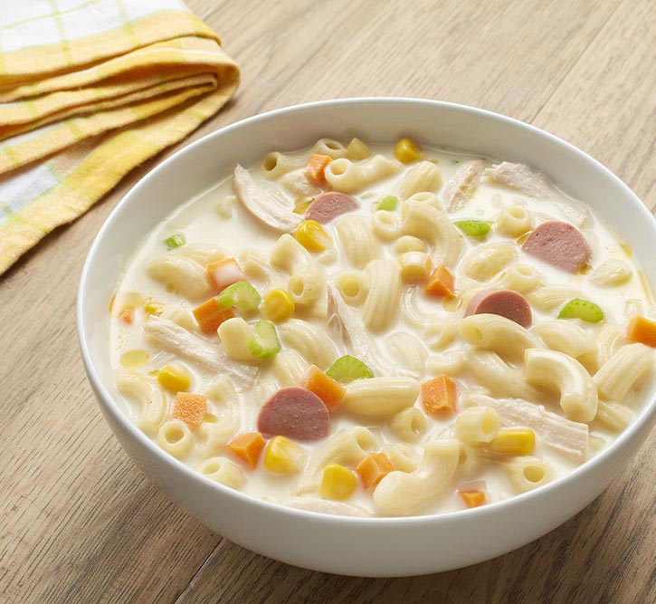

Sopas Recipe

Description
Ingredients
- 250 gram Macaroni noodles
- 30 ml Cooking oil
- 1 pc Medium-sized red onion, diced
- 4 to 5 cloves Garlic, minced
- 1 pc Chicken breast fillet, sliced into strips
- 1/2 pack Chorizo bilbao or garlic longganisa, sliced
- 1 can Alaska Classic Evaporated Filled Milk 370mL
- 500 ml Water
- 1 pc Chicken broth cube
- 1 to 2 pcs Celery stalk, sliced
- 1 pc Carrot, sliced into strips
- 1/2 pc Cabbage, sliced into thin strips
- Salt and pepper to taste
Steps
-
Cook Macaroni noodles according to package instructions. Set aside.
-
In a pot, heat up oil then sauté onion and garlic until tender and
aromatic. Add in chicken strips and chorizo bilbao or longganisa then
sauté until chicken is cooked.
-
Add in Alaska Classic Evaporated Filled Milk and water then let it boil.
Reduce heat to a simmer then add in broth cubes, carrots and celery. Let
it simmer for 5 minutes.
- Season with salt and pepper as needed.
- Stir in cabbage and cooked macaroni noodles.
- Remove from heat then transfer to a serving bowl.
- Serve immediately.